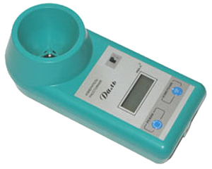

Ультразвуковой измеритель расстояния "Даль"
Ультразвуковой цифровой прибор "Даль" (измеритель расстояния) позволяет без приближения к токоведущим частям и без снятия напряжения с воздушной линии электропередачи определять расстояние от земли до ее нижнего провода (габарит провода).
При необходимости прибором "Даль" можно поочередно измерить расстояния до двух или трех проводов, расположенных друг над другом, что дает возможность рассчитать расстояния между ними.
Прибор «Даль» включен в государственный реестр (Свидетельство) средств измерений под №40490-09 (сертификат на утверждение типа средства измерений RU.C.27.010.A №35152). Введена поверка всех выпускаемых и отремонтированных приборов. Возможно проведение периодической поверки или калибровки приборов «Даль», которые находятся в эксплуатации.
Порядок применения прибора "Даль" смотрите в Руководстве по эксплуатации.
Область применения
- Применение прибора "Даль" возможно в энергетике, связи, железнодорожном и городском транспорте, а также в других отраслях промышленности.
- Прибор "Даль" позволяет производить измерения расстояний (вертикальный габарит) до трех проводов воздушных линий электропередачи, подвесных кабельных линий, линий связи. Зная особенности прибора, с его помощью можно определять высоту пролетов мостов, путепроводов, и других переходов через магистрали.
Особенности применения
- Измерения прибором "Даль" производятся с земли под проводами ВЛ. Измеритель расстояния следует расположить под проводами ВЛ таким образом, чтобы посторонние предметы (здания, деревья) и сам измеряющий не попали в сектор излучения.
- Во время измерения прибор «Даль» излучает ультразвуковые волны (сигнал конусообразной формы), которые распространяются в воздухе и, достигнув провода, отражаются в сторону прибора. По скорости прихода волны определяется расстояние от земли до ее нижнего провода (габарит провода).
- Скорость распространения ультразвуковых волн зависит от температуры окружающего воздуха. Для устранения зависимости показаний от температуры в приборе предусмотрена температурная коррекция результатов измерения.
- В условиях сильной влажности (туман, после дождя и т.п.) максимально измеряемое прибором расстояние может уменьшиться. Это не является неисправностью и обусловлено особенностью распространения ультразвуковых волн в воздушной среде.
- В приборе "Даль" предусмотрено запоминание результатов измерений и возможен их поочередный многократный просмотр. Также осуществляется справочная индикация температуры окружающего воздуха и напряжения внутреннего источника питания.
- Отключение прибора - автоматическое.
Характеристики:
| Диапазон показаний, м | 3,5 ... 15 |
| Погрешность измерений расстояний, не более, % |
2 |
| Габаритные размеры корпуса, мм | 200х90х70 |
| Масса (с элементами питания, без футляра), не более, кг | 0,4 |
| Питание СН - автономное, от двух элементов R6 - AA-UM3 (А316), В |
6 |
| Количество измерений, не менее | 10 000 |
| Температурный диапазон, °С | -10 ... +40 |
| Срок службы, год, не менее | 6 |
Разработка и сертификация
Прибор "Даль" сертифицирован в системе ГОСТ Р (Сертификат соответствия № РОСС RU.АИ50.Н13851 от 05.11.2008 г.). Разработан и изготавливается Научно-производственным центром "Электробезопасность", г. Киров.
Гарантийный срок эксплуатации измерителя расстояния "Даль" - 2 года со дня отгрузки с предприятия-изготовителя.
Условия ремонта и поверки приборов "Даль"
В случае отказа прибора в работе или необходимости проведения поверки для прибора «Даль» потребитель составляет сопроводительное письмо-заявку и отправляет его вместе с прибором по адресу: 610000, Россия, г. Киров, а/я 57(почта) или иным способом на ООО «Электробезопасность-Вятка». В сопроводительном письме необходимо указать:
- реквизиты организации;
- заводской номер и дату выпуска прибора;
- требуемое техническое обслуживание (ремонт, поверка – для прибора «Даль»);
- описание неисправности;
- контактное лицо, номер телефона.
Примечание: гарантийный срок эксплуатации прибора – 2 года со дня отгрузки с предприятия-изготовителя. Срок службы– 6 лет. Для приборов «Даль», применяемых в сфере гос.регулирования, обязательна ежегодная поверка (указать в письме-заявке).
Поверка производится бесплатно в случае ремонта прибора в течение первого года гарантии. На после гарантийный ремонт – срок гарантии 6 месяцев. Гарантия не распространяется на ремонт приборов с истекшим сроком службы. Транспортировка не гарантийных приборов осуществляется силами заказчика.